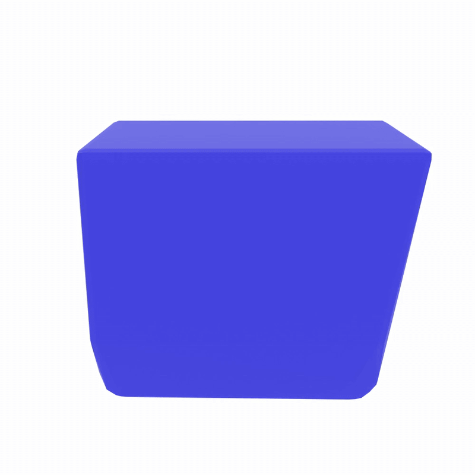
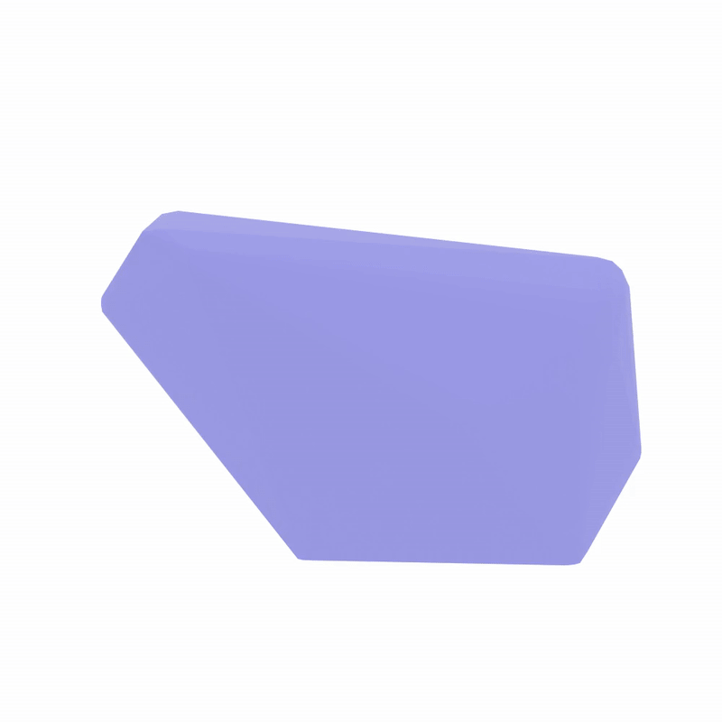
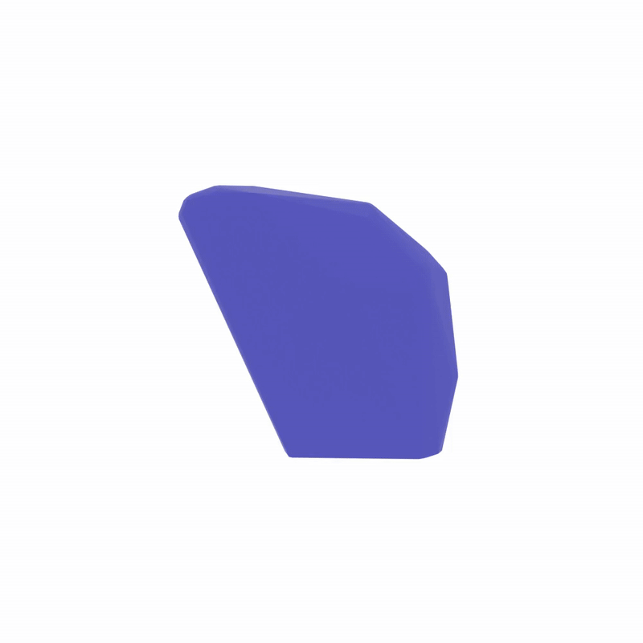
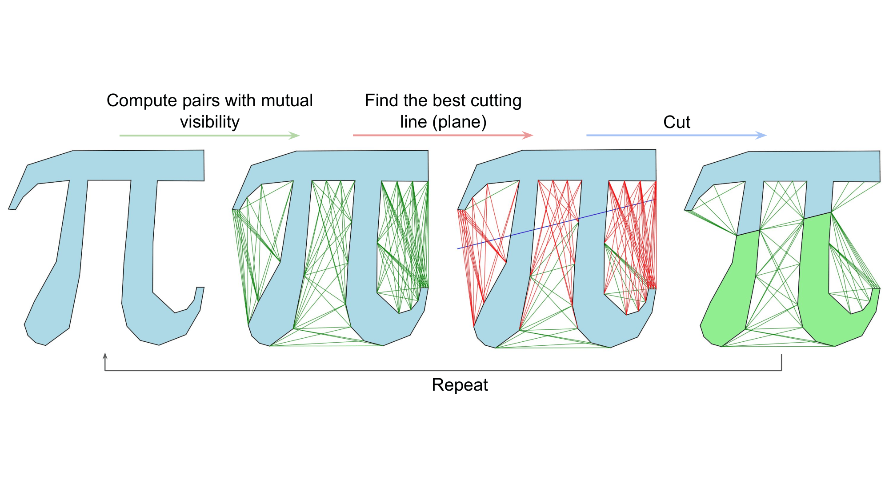
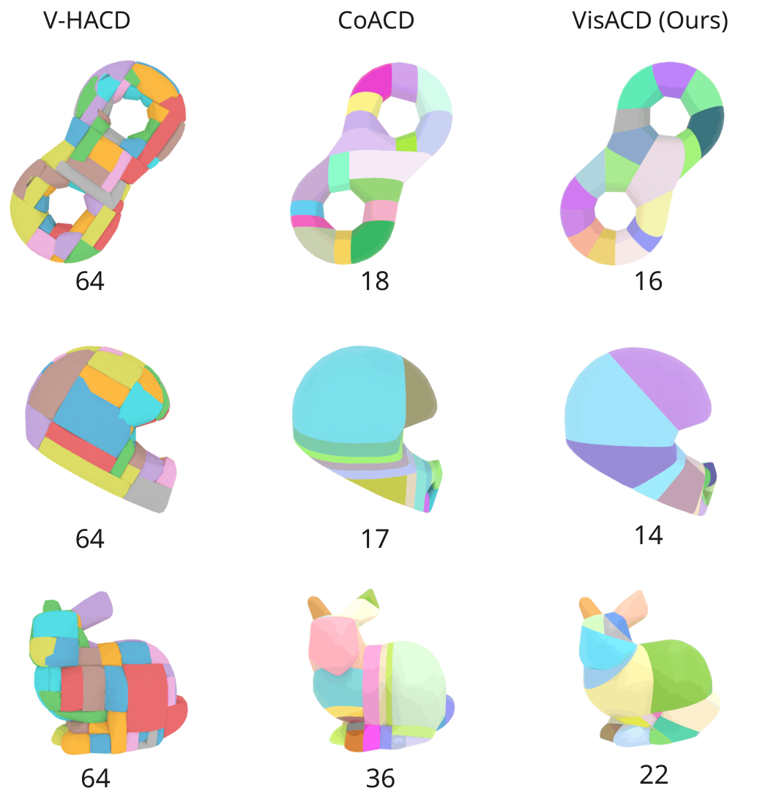
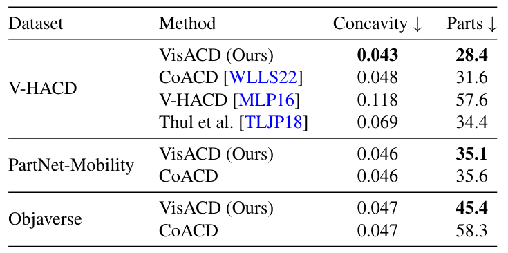

We present VisACD, a visibility-based, GPU-accelerated algorithm for intersection-free approximate convex decomposition (ACD). The method is rotation-equivariant, making it robust to variations in input mesh orientation. Compared to prior work, VisACD produces decompositions that more closely approximate the original geometry while using fewer parts, and does so with significantly improved efficiency.
At the core of the approach is a concavity metric designed specifically for efficient cutting plane computation, enabling high-quality decompositions without excessive fragmentation. The algorithm is fully parallelized using NVIDIA OptiX and CUDA, allowing it to scale effectively and achieve substantial performance gains over existing methods.




We introduce a visibility-based concavity metric that avoids expensive convex hull computations by relying solely on mesh vertices. The key idea is to define visibility edges as edges between pairs of vertices that lie outside the mesh without intersecting it. A convex mesh contains no such edges, while increasingly concave geometry produces more of them.
Given a mesh, we aim to find cutting planes that reduce concavity. A plane splits the mesh into two parts and removes visibility edges it intersects. This yields a simple and efficient value function: the best plane is the one that intersects the largest total length of visibility edges, making it highly interpretable and fast to evaluate.

Our method outperforms all baselines on all datasets while having lower computation time (16.97 seconds on average per PartNet-Mobility model vs 36.31 for CoACD).

@inproceedings{fokin2026visacd,
title={VisACD: Visibility-Based GPU-Accelerated Approximate Convex Decomposition},
author={Fokin, Egor and Savva, Manolis},
booktitle={47th Annual Conference of the European Association for Computer Graphics,
Eurographics 2026 - Short Papers},
year={2026}
}